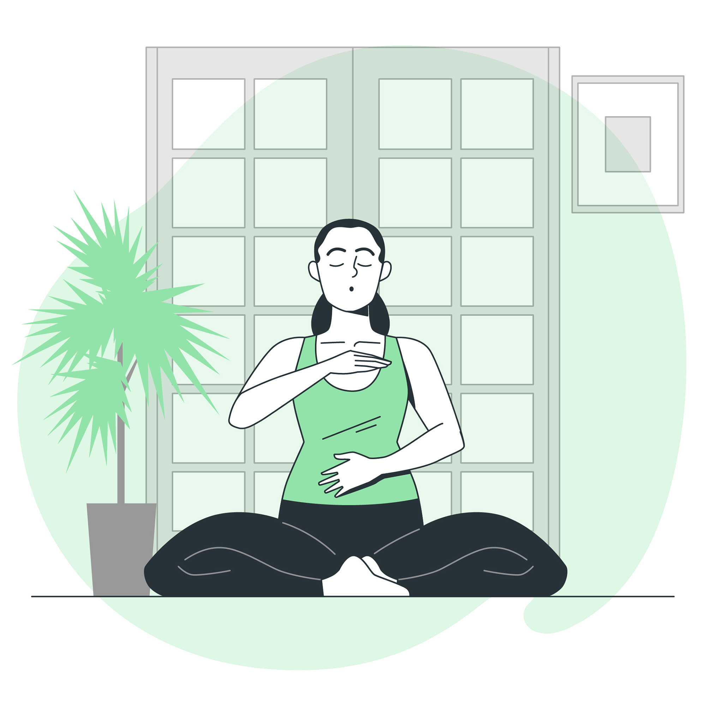

Breathing Exercise
Breathing exercises help calm the mind, reduce stress, and improve focus. Regular practice can enhance emotional resilience and promote mental clarity.

Yoga Practices
Yoga promotes physical health, mental well-being, and relaxation. It helps improve flexibility, reduce anxiety, and cultivate a mindful approach to daily life.
Embracing Nature
Spending time in nature has proven benefits, including stress reduction, mood enhancement, and a sense of connectedness. Nature walks can refresh the mind and body.